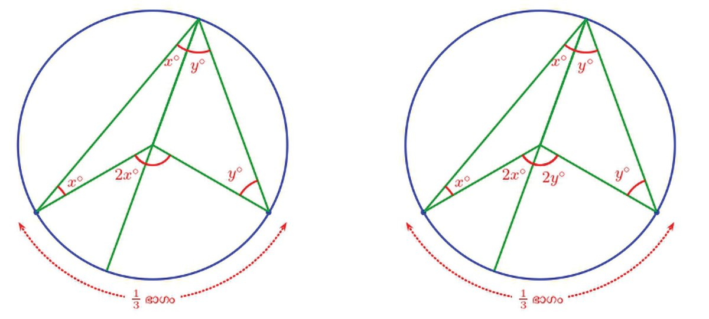
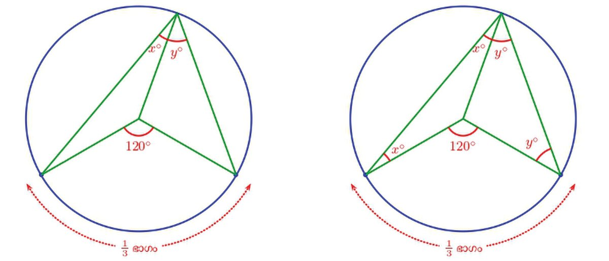
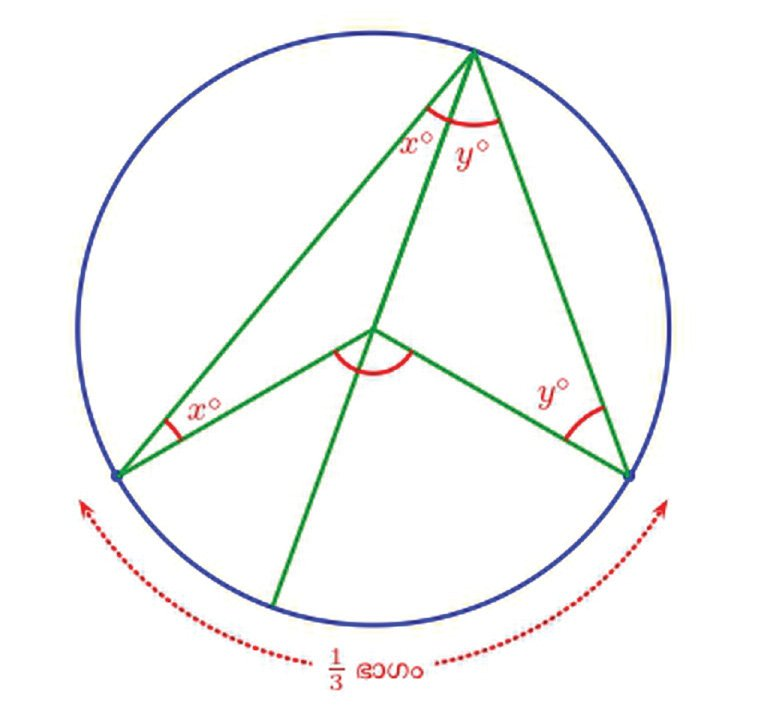
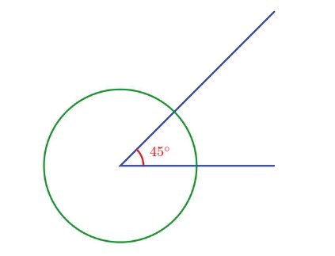
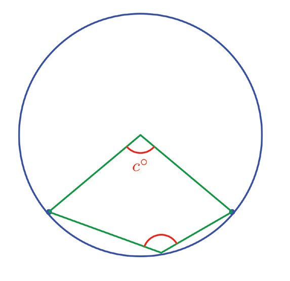
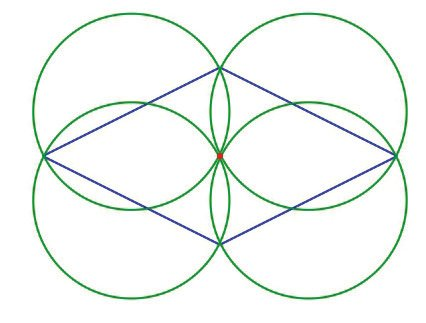
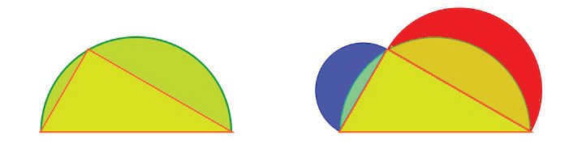
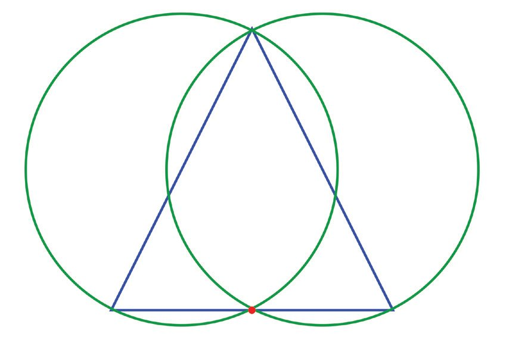
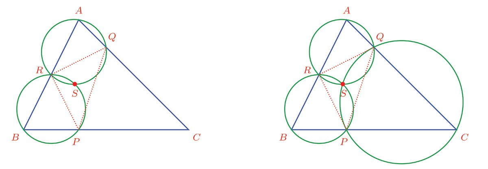

വൃത്തഭാഗങ്ങൾ
ഒരു വളയത്തിന്റെ 13 ഭാഗം മുറിച്ചെടുക്കുന്നതെങ്ങനെ ?
ഒമ്പതാംക്ലാസിലെ വൃത്തഭാഗങ്ങൾ എന്ന പാഠത്തിലെ നീളവും കോോണും എന്ന ഭാഗത്ത് കണ്ടതനു
സരിച്ച്, ഇത്തരം ഒരു ചാപത്തിന്റെ കേന്ദ്രകോോൺ 360° × 13 = 120° ആയിരിക്കണമല്ലോോ.
X ഗണിതം ഭാഗം - I
അപ്പോോൾ ആദ്യംം, എട്ടാംക്ലാസിലെ വൃത്തങ്ങൾ എന്ന പാഠത്തിലെ ഞാണുകൾ എന്ന ഭാഗത്തിൽ
കണ്ട ഏതെങ്കിലും രീതി ഉപയോോഗിച്ച്, വൃത്തത്തിന്റെ കേന്ദ്രം അടയാളപ്പെടുത്തുക; കേന്ദ്രത്തിൽ
1
120° കോോൺ വരച്ച്, 3 ഭാഗം നീളമുള്ള ചാപം അടയാളപ്പെടുത്തുക.
കേന്ദ്രം അടയാളപ്പെടുത്താതെ, നേരിട്ട് ഈ ചാപം അടയാളപ്പെടുത്താൻ കഴിയുമോോ ? അതായത്,
വൃത്തത്തിലെ തന്നെ ഏതെങ്കിലും ഒരു ബിന്ദുവിൽ നിന്ന് രണ്ടു വര വരച്ച്, ഈ ചാപം അടയാള
പ്പെടുത്താൻ വല്ല വഴിയുമുണ്ടോോ ?
ചോോദ്യംം കുറേക്കൂടി വ്യയക്തമാക്കാം. മുകളിലെ ചിത്രത്തിലെ കോോൺ എത്രയായി എടുത്താലാണ്,
കേന്ദ്രത്തിലെ കോോൺ 120° ആകുക ?
ഇതു കണക്കാക്കാൻ, ഈ കോോണിന്റെ മൂലയും വൃത്തകേന്ദ്ര
വും തമ്മിൽ യോോജിപ്പിച്ച്, ഈ കോോണിനെ രണ്ടു ഭാഗങ്ങളാ
ക്കാം:
32
Page 33
Figure fig_ch02_p033_01 (Page 33)

Figure fig_ch02_p033_02 (Page 33)

Figure fig_ch02_p033_03 (Page 33)

Figure fig_ch02_p033_04 (Page 33)
വൃത്തങ്ങളുംം കോോണുകളുംം X
ഇപ്പോോൾ ചിത്രത്തിൽ രണ്ടു ത്രികോോണങ്ങളുണ്ടല്ലോോ. രണ്ടിന്റെയും ഒരു ജോോടി വശങ്ങൾ, വൃത്ത
ത്തിന്റെ ആരങ്ങൾ ആയതിനാൽ അവയ്ക്ക് ഒരേ നീളമാണ്; അതായത് ഇവ രണ്ടും സമപാർശ്വവത്രി
കോോണങ്ങളാണ്. അപ്പോോൾ മുകളിലെ കോോണിന്റെ ഭാഗങ്ങൾ x°, y° എന്നെടുത്താൽ, ത്രികോോണങ്ങ
ളിലെ താഴത്തെ കോോണുകളുംം ഇവ തന്നെയാണ്.
ഇനി ത്രികോോണങ്ങളുടെ പൊൊതുവായ വശം നീട്ടി വരച്ചാൽ, കേന്ദ്രകോോണും രണ്ടു ഭാഗമാകും:
കേന്ദ്രകോോണിന്റെ ഈ ഭാഗങ്ങൾ, ഇടതും വലതുമുള്ള സമപാർശ്വവത്രികോോണങ്ങളുടെ മൂന്നാം മൂലക
ളിലെ പുറംകോോണുകളാണ്; അതിനാൽ ഇവ മറ്റു രണ്ടു മൂലകളിലെ അകക്കോോണുകളുടെ തുകക
ളാണ് (എട്ടാം ക്ലാസിലെ ബഹുഭുജങ്ങൾ എന്ന പാഠത്തിലെ പുറംകോോണുകൾ എന്ന ഭാഗം).
X ഗണിതം ഭാഗം - I
കേന്ദ്രകോോൺ 120° ആയതിനാൽ
2x + 2y = 120
a എന്ന പേരിൽ ഒരു Angle Slider നിർ
മ്മിക്കുക. A എന്ന ഒരു ബിന്ദു കേന്ദ്ര
എന്നും, ഇതിൽനിന്ന്
മായി ഒരു വൃത്തം വരച്ച് അതിൽ
x + y = 60
എന്നും കാണാമല്ലൊൊ. അതായത്, ചാപത്തിന്റെ അറ്റങ്ങൾ
വൃത്തത്തിലെ ബിന്ദുവിലുണ്ടാക്കുന്ന കോോൺ, 60°.
B എന്ന ഒരു ബിന്ദു അടയാളപ്പെടുത്തുക.
Angle With Given Size ടൂൾ ഉപയോോഗിച്ച് B
യിലും തുടർന്ന് വൃത്തകേന്ദ്രത്തിലും ക്ലിക്ക്
ചെയ്യുമ്പോോൾ ലഭിക്കുന്ന ജാലകത്തിൽ
കോോണളവായി 'a' എന്ന് നൽകുക. വൃത്ത
ത്തിൽ ഒരു പുതിയ ബിന്ദു B′ ലഭിക്കും.
BA, AB′ എന്നീ വരകൾ വരച്ച് കേന്ദ്രകോോൺ
അടയാളപ്പെടുത്തുക. കേന്ദ്രകോോൺ 180°
യിൽ കുറവാകത്തക്കവിധം ക്രമീകരിക്കുക.
വൃത്തത്തിലെ വലിയ ചാപത്തിൽ C എന്ന
ഒരു ബിന്ദു അടയാളപ്പെടുത്തി BC, B′C
എന്നീ വരകൾ വരച്ച് ∠C അടയാളപ്പെടു
ത്തുക. ∠A, ∠C ഇവ തമ്മിലുള്ള ബന്ധമെ
ന്താണ് ? C യുടെ സ്ഥാനം മാറ്റി നോോക്കൂ.
സ്ലൈഡർ ഉപയോോഗിച്ച് ∠A മാറ്റി നോോക്കൂ.
ഇവിടെ കണ്ടത് എന്താണ് ?
വൃത്തത്തിന്റെ 13 ഭാഗം അടയാളപ്പെടുത്താൻ, കേന്ദ്രത്തിൽ 120° അടയാളപ്പെടുത്തുന്നതിനു പകരം,
വൃത്തത്തിലെ ഒരു ബിന്ദുവിൽ 60° അടയാളപ്പെടുത്തിയാലും മതി.
ഇതുപോോലെ, ഒരു വൃത്തത്തിന്റെ 15 ഭാഗം അടയാളപ്പെടുത്താൻ, വൃത്തത്തിലെ ഒരു ബിന്ദുവിൽ
വരയ്ക്കേണ്ട കോോണിന്റെ അളവ് എത്രയാണെന്നു കണക്കാക്കുക.
ചാപവും കോോണും
വൃത്തത്തിലെ ഒരു ബിന്ദുവിൽ 60° അടയാളപ്പെടുത്തിയാൽ വൃത്തത്തിന്റെ 13 ഭാഗമായ ചാപം കി
ട്ടുമെന്നും, 36° അടയാളപ്പെടുത്തിയാൽ വൃത്തത്തിന്റെ 15 ഭാഗമായ ചാപം കിട്ടുമെന്നും കണ്ടല്ലോോ.
വൃത്തങ്ങളുംം കോോണുകളുംം X
ഇക്കാര്യയങ്ങൾ, വൃത്തത്തിന്റെ ഭാഗങ്ങൾക്കു പകരം, ചാപങ്ങളുടെ കേന്ദ്രകോോണുകൾ ഉപയോോഗിച്ചും
പറയാം.
അപ്പോോൾ ഒരു ചോോദ്യംം: വൃത്തത്തിലെ ഏതെങ്കിലും ചാപത്തിന്റെ അറ്റങ്ങൾ, വൃത്തത്തിലെ ഒരു
ബിന്ദുവുമായി യോോജിപ്പിച്ചാൽ, കേന്ദ്രകോോണിന്റെ പകുതികോോൺ കിട്ടുമോോ?
ചാപത്തിന്റെ കേന്ദ്രകോോൺ c° എന്നെടുക്കാം.
നേരത്തെ ചെയ്തതുപോോലെ, വൃത്തകേന്ദ്രവും, വൃത്തത്തിലെ ബിന്ദുവും യോോജിപ്പിക്കുന്ന വര മുകളിലെ
കോോണിനെ മുറിക്കുന്ന ഭാഗങ്ങൾ x°, y° എന്നെടുക്കാം.
ഈ വര നീട്ടിവരച്ച് കോോണുകൾ ഇങ്ങനെ അടയാളപ്പെടുത്താമല്ലോോ.
X ഗണിതം ഭാഗം - I
കേന്ദ്രകോോൺ c° എന്നാണല്ലോോ എടുത്തത്. അപ്പോോൾ
2x + 2y = c
എന്നും ഇതിൽനിന്ന്
എന്നും കാണാം.
1
x+y= 2c
(1) ചിത്രത്തിൽ അടയാളപ്പെടുത്തിയ ചാപം വൃത്തത്തിന്റെ എത്ര ഭാഗമാണ് ?
(2) ഒരു കമ്പി രണ്ടായി മടക്കി, അതിന്റെ മൂല ഒരു വൃത്തത്തിന്റെ കേന്ദ്രത്തിൽ വച്ച
1
പ്പോോൾ, വൃത്തത്തിന്റെ 10
ഭാഗം അതിനുള്ളിൽപ്പെട്ടു. ഇതേ കമ്പിയുടെ മൂല, വൃത്ത
ത്തിലെ ഒരു ബിന്ദുവിൽ ചേർത്തു വച്ചാൽ, വൃത്തത്തിന്റെ എത്ര ഭാഗമാണ് അതിനു
ള്ളിലുണ്ടാകുക ? മറ്റേതെങ്കിലും വൃത്തത്തിലെ ഒരു ബിന്ദുവിൽ ചേർത്തുവച്ചാലോോ ?
വൃത്തങ്ങളുംം കോോണുകളുംം X
അപ്പോോൾ മറ്റൊൊരു ചോോദ്യംം: ചാപത്തിന്റെ അറ്റങ്ങൾ വൃത്തത്തിലെ ഏതു ബിന്ദുവുമായി യോോജിപ്പി
ച്ചാലും പകുതിക്കോോൺ കിട്ടുമോോ ? ചിത്രം ഇങ്ങനെ ആയാലോോ ?
ഇതിൽ വൃത്തത്തിലെ ബിന്ദു, ചാപത്തിന്റെ ഒരറ്റത്തിലൂടെ വരയ്ക്കുന്ന വ്യാസം വൃത്തവുമായി കൂട്ടി
മുട്ടുന്ന ബിന്ദുവാണ്. അപ്പോോൾ ഈ ബിന്ദുവിൽ ചാപം ഉണ്ടാക്കുന്ന കോോൺ x° എന്നെടുത്താൽ,
മറ്റു കോോണുകൾ ഇങ്ങനെ കണക്കാക്കാമല്ലോോ.
ഇനി വൃത്തത്തിലെ ബിന്ദു വീണ്ടും താഴ്ത്തി ഇങ്ങനെ എടുത്താലോോ ?
വൃത്തങ്ങളുംം കോോണുകളുംം X
ചുവടെയുള്ള ചിത്രങ്ങളിൽ, വൃത്തത്തിലെ ഒരു ചാപത്തിന്റെ കേന്ദ്രകോോൺ കാണിച്ചിട്ടുണ്ട്.
ഓരോോ ചിത്രത്തിലും ചാപം വൃത്തത്തിന്റെ മറ്റു രണ്ടു ബിന്ദുക്കളിൽ ഉണ്ടാക്കുന്ന
കോോണുകൾ കണക്കാക്കുക.
ഇനി ചാപത്തിന്റെ കേന്ദ്രകോോൺ 180° തന്നെയായാലോോ ? അതായത്, ചാപം അർധവൃത്ത
മായാലോോ ?
X ഗണിതം ഭാഗം - I
സമപാർശ്വവത്രികോോണങ്ങളിലെ താഴത്തെ കോോണുകളുംം x°, y° ഇവതന്നെയാണ്.
വൃത്തത്തിനകത്തെ വലിയ ത്രികോോണത്തിലെ
കളുടെ തുക 180° ആയതിനാൽ
കോോണു
(x + y) + x + y = 180
എന്നും ഇതിൽ നിന്ന് x + y = 90 എന്നും കാണാമല്ലോോ.
ഈ കണക്കുകളിലെല്ലാം ചെയ്തത് എന്താണ് ?
വൃത്തത്തിലെ ഒരു ചാപത്തിന്റെ കേന്ദ്രകോോണും, ചാപത്തിന്റെ അറ്റങ്ങൾ വൃത്തത്തിലെ ഒരു ബിന്ദു
വുമായി യോോജിപ്പിച്ചു കിട്ടുന്ന കോോണും തമ്മിലുള്ള ബന്ധം കണക്കാക്കി:
42
Page 43
Figure fig_ch02_p043_01 (Page 43)

Figure fig_ch02_p043_02 (Page 43)

Figure fig_ch02_p043_03 (Page 43)
വൃത്തങ്ങളുംം കോോണുകളുംം X
ഇതിലെല്ലാം ചാപത്തിന്റെ അറ്റങ്ങൾ യോോജിപ്പിക്കുന്ന വൃത്തത്തിലെ ബിന്ദു, ചാപത്തിന്റെ പുറത്തു
ള്ള ഒരു ബിന്ദുവാണെന്നത് ശ്രദ്ധിക്കുക.
ചാപത്തിലെ തന്നെ ഒരു ബിന്ദുവുമായി യോോജിപ്പിച്ചാൽ കിട്ടുന്ന കോോൺ കേന്ദ്രകോോണിന്റെ പകുതി
യല്ലെന്ന് എളുപ്പം കാണാമല്ലോോ:
ഇതുവരെ കണ്ടതെല്ലാം ചേർത്ത് പൊൊതുതത്വവമായി ഇങ്ങനെ പറയാം:
വൃത്തത്തിലെ ഒരു ചാപത്തിന്റെ അറ്റങ്ങൾ, വൃത്തത്തിലെ ആ ചാപത്തിൽ അല്ലാത്ത, ഒരു ബിന്ദു
വുമായി യോോജിപ്പിച്ചാലുണ്ടാകുന്ന കോോൺ, ചാപത്തിന്റെ കേന്ദ്രകോോണിന്റെ പകുതിയാണ്
ഇതിൽ അർധവൃത്തത്തിന്റെ കാര്യംം പ്രത്യേേകം പറയേണ്ടതാണ്.
അർധവൃത്തത്തിന്റെ അറ്റങ്ങൾ
ഉണ്ടാകുന്ന കോോൺ മട്ടമാണ്
ഈ തത്വവങ്ങളുടെ ചില പ്രയോോഗങ്ങൾ നോോക്കാം.
കോോണുകൾ പകുതിയാക്കാൻ ആദ്യംം പറഞ്ഞ തത്വം ഉപയോോഗിക്കാം. ഈ ചിത്രം നോോക്കൂ:
കോോണിന്റെ മൂല കേന്ദ്രമായാണ് വൃത്തം വരച്ചിരിക്കുന്നത്. ഇനി കോോണിന്റെ താഴത്തെ വര നീട്ടി
വൃത്തത്തിൽ മുട്ടുന്ന ബിന്ദുവും, കോോണിന്റെ മുകളിലെ വര വൃത്തത്തെ മുറിച്ചു കടക്കുന്ന ബിന്ദുവും
യോോജിപ്പിച്ചാൽ പകുതിക്കോോണായി.
43
ഒരു വൃത്തത്തിനുള്ളിൽ നിശ്ചിത കോോണുകളുള്ള ത്രികോോണം വരയ്ക്കാനും ഈ തത്വം ഉപയോോഗി
ക്കാം. ഉദാഹരണമായി, മൂലകളെല്ലാം വൃത്തത്തിലായതും, കോോണുകൾ 50°, 60°, 70° യും ആയ
ത്രികോോണം വരയ്ക്കുന്നതെങ്ങനെയെന്നു നോോക്കാം.
ത്രികോോണത്തിന്റെ മൂലകൾ, വൃത്തത്തെ മൂന്നു ചാപങ്ങളായി ഭാഗിക്കുന്നുണ്ടല്ലോോ. അവയുടെ കേന്ദ്ര
കോോണുകൾ എന്താണ് ?
വൃത്തങ്ങളുംം കോോണുകളുംം X
അപ്പോോൾ ത്രികോോണം വരയ്ക്കാൻ, കേന്ദ്രത്തിൽ ഇതിലെ രണ്ടു കോോണുകൾ വരച്ചാൽ മതിയല്ലോോ.
ഇനി അർധവൃത്തത്തിലെ കോോൺ മട്ടമാണ് എന്ന തത്വം ഉപയോോഗിച്ച്, ഒരു വരയ്ക്ക് ലംബം വരയ്ക്കുന്നത്
എങ്ങനെയെന്നു നോോക്കാം. ചിത്രത്തിലെ വരയുടെ വലത്തെ അറ്റത്തുകൂടി വരയ്ക്ക് ലംബം വരയ്ക്കണം.
അതിന് ആദ്യംം, ഈ ബിന്ദുവിൽക്കൂടി കടന്നുപോോകുന്നതും, വരയെ മറ്റൊൊരു ബിന്ദുവിൽ മുറിച്ചുക
ടക്കുന്നതുമായ ഒരു വൃത്തം വരയ്ക്കണം:
ഇനി ഈ ബിന്ദുവിൽക്കൂടിയുള്ള വ്യാസം വരച്ച്, അതിന്റെ മറ്റേ അറ്റം, ആദ്യയത്തെ വരയുടെ അറ്റ
വുമായി യോോജിപ്പിക്കുക:
X ഗണിതം ഭാഗം - I
അർധവൃത്തത്തിലെ കോോൺ മട്ടമായതിനാൽ, ഈ വര, ആദ്യയത്തെ വരയ്ക്ക് ലംബമാണ്.
സ്കേലും കോോമ്പസും ഉപയോോഗിച്ച് ലംബങ്ങൾ വരയ്ക്കാനുള്ള മറ്റൊൊരു മാർഗം എട്ടാം ക്ലാസിൽ കണ്ടത്
ഓർമയുണ്ടോോ (സമഭാജികൾ എന്ന പാഠത്തിലെ വരയുടെ സമഭാജികൾ എന്ന ഭാഗം).
(1) ഒരു ക്ലോോക്കിലെ 1, 4, 8 എന്നീ സംഖ്യയകൾ യോോജിപ്പിച്ച് ഒരു ത്രികോോണം വരയ്ക്കുന്നു.
(i)
ഈ ത്രികോോണത്തിലെ കോോണുകൾ കണക്കാക്കുക.
(ii) ക്ലോോക്കിലെ സംഖ്യയകൾ യോോജിപ്പിച്ച് എത്ര സമഭുജത്രികോോണങ്ങളുണ്ടാക്കാം ?
(2) പരിവൃത്തആരം 3.5 സെന്റിമീറ്റർ ആയ ഒരു സമഭുജത്രികോോണം വരയ്ക്കുക.
1%
1%
(3) പരിവൃത്തആരം 3 സെന്റിമീറ്ററുംം, രണ്ടു കോോണുകൾ 32 2 യും 37 2 യും ആയ
ത്രികോോണം വരയ്ക്കുക.
(4) ചിത്രത്തിൽ ഒരു വര വ്യാസമായി വലിയ അർധവൃത്തവും, വരയുടെ പകുതി വ്യാസ
മായി ചെറിയ അർധവൃത്തവും വരച്ചിരിക്കുന്നു. ഇവ കൂട്ടിമുട്ടുന്ന ബിന്ദുവും വലിയ
അർധവൃത്തത്തിലെ ഏതു ബിന്ദുവും യോോജിപ്പിക്കുന്ന വരയെ, ചെറിയ അർധവൃത്തം
സമഭാഗം ചെയ്യുമെന്ന് തെളിയിക്കുക.
46
Page 47
Figure fig_ch02_p047_01 (Page 47)

Figure fig_ch02_p047_02 (Page 47)

Figure fig_ch02_p047_03 (Page 47)

Figure fig_ch02_p047_04 (Page 47)
വൃത്തങ്ങളുംം കോോണുകളുംം X
(5) ഒരു സമപാർശ്വവത്രികോോണത്തിന്റെ തുല്യയമായ വശങ്ങൾ വ്യാസമായി വരയ്ക്കുന്ന വൃത്തങ്ങൾ,
മൂന്നാമത്തെ വശത്തിന്റെ മധ്യയബിന്ദുവിലൂടെ കടന്നുപോോകും എന്നു തെളിയിക്കുക:
(സൂചന : ഓരോോ വൃത്തമായി പരിശോോധിക്കുക).
(6) ഒരു സമഭുജസാമാന്തരികത്തിന്റെ നാലു വശങ്ങളുംം വ്യാസമായി വരയ്ക്കുന്ന വൃത്തങ്ങളെല്ലാം
പൊൊതുവായ ഒരു ബിന്ദുവിലൂടെ കടന്നുപോോകും എന്നു തെളിയിക്കുക.
(7) ഒരു അർധവൃത്തത്തിലെ ഒരു ബിന്ദുവും, വ്യാസത്തിന്റെ രണ്ടറ്റങ്ങളുംം ചേർത്ത് ഒരു
ത്രികോോണം വരച്ചു. തുടർന്ന്, ത്രികോോണത്തിന്റെ മറ്റു രണ്ടു വശങ്ങൾ വ്യാസമായി അർധ
വൃത്തങ്ങളുംം വരച്ചിട്ടുണ്ട്.
രണ്ടാം ചിത്രത്തിലെ നീലയും ചുവപ്പുമായ ചന്ദ്രക്കലകളുടെ പരപ്പളവുകൾ കൂട്ടിയാൽ,
ത്രികോോണത്തിന്റെ പരപ്പളവ് കിട്ടുമെന്ന് തെളിയിക്കുക.
(സൂചന: ഒമ്പതാം ക്ലാസിലെ വൃത്തഭാഗങ്ങൾ എന്ന പാഠത്തിലെ അവസാനത്തെ ചോോദ്യംം
ഓർക്കുക).
X ഗണിതം ഭാഗം - I
(8) ചിത്രത്തിലെ വൃത്തത്തിൽ, AB, CD ഇവ പരസ്പരം ലംബമായ ഞാണുകളാണ്. APC, BQD
എന്നീ ചാപങ്ങൾ ചേർത്തുവച്ചാൽ, വൃത്തത്തിന്റെ പകുതിയാകും എന്നു തെളിയിക്കുക.
വൃത്തഖണ്ഡങ്ങൾ
വൃത്തത്തിലെ ഏതു രണ്ടു ബിന്ദുക്കളുംം അതിനെ രണ്ടു ചാപങ്ങളായി ഭാഗിക്കുമല്ലോോ.
ഇവയിൽ ഓരോോ ചാപത്തിനേയും മറ്റേ ചാപത്തിന്റെ മറുചാപം (Alternate arc) എന്നു വിളിക്കാം.
വൃത്തത്തിലെ ഒരു ബിന്ദു, ഇവയിലെ ഒരു ചാപത്തിൽ അല്ലെങ്കിൽ അതിന്റെ മറുചാപത്തിലാണ്.
അപ്പോോൾ ഒരു ചാപത്തിന്റെ കേന്ദ്രകോോണും, അതിന്റെ അറ്റങ്ങൾ വൃത്തത്തിലെ ഒരു ബിന്ദുവുമായി
യോോജിപ്പിച്ചാൽ കിട്ടുന്ന കോോണും തമ്മിലുള്ള ബന്ധം ഇങ്ങനെ പറയാം:
വൃത്തത്തിലെ ഒരു ചാപത്തിന്റെ അറ്റങ്ങൾ, മറുചാപത്തിലെ ഏതു ബിന്ദുവുമായും യോോജിപ്പിച്ചാലു
ണ്ടാകുന്ന കോോൺ, ചാപത്തിന്റെ കേന്ദ്രകോോണിന്റെ പകുതിയാണ്
അതായത്, വൃത്തത്തിലെ രണ്ടു ബിന്ദുക്കൾ വൃത്തത്തെ രണ്ട് ചാപങ്ങളായി മുറിക്കുന്നു; ഈ
ബിന്ദുക്കൾ ഇവയിലെ ഒരു ചാപത്തിലെ ബിന്ദുക്കളുമായി യോോജിപ്പിച്ച് ഉണ്ടാക്കുന്ന കോോണു
കളെല്ലാം തുല്യയമാണ്.
ഒരു ചാപത്തിലെയും മറുചാപത്തിലെയും ബിന്ദുക്കളുമായി യോോജിപ്പിച്ച് ഉണ്ടാക്കുന്ന കോോണുകൾ
തമ്മിലെന്താണ് ബന്ധം ?
വൃത്തത്തിലെ രണ്ടു ബിന്ദുക്കൾ ഉണ്ടാക്കുന്ന ഒരു ചാപത്തിന്റെയും മറുചാപത്തിന്റെയും കേന്ദ്ര
കോോണുകളുടെ തുക 360° ആണല്ലോോ.
X ഗണിതം ഭാഗം - I
ഒരു ചാപത്തിലെയും മറുചാപത്തിലെയും ബിന്ദുക്കളിലുണ്ടാക്കുന്ന കോോണുകൾ ഇവയുടെ
പകുതിയും.
അപ്പോോൾ എന്തു പറയാം ?
വൃത്തത്തിലെ രണ്ടു ബിന്ദുക്കൾ, അവ നിശ്ചയിക്കുന്ന ഒരു ചാപത്തിലും മറുചാപത്തിലും
ഉണ്ടാക്കുന്ന കോോണുകളുടെ തുക 180° ആണ്.
ഇത് മറ്റൊൊരു തരത്തിൽ പറയാം. വൃത്തത്തിലെ ഏതെങ്കിലും
രണ്ടു ബിന്ദുക്കൾ യോോജിപ്പിക്കുന്ന ഒരു ഞാൺ, വൃത്തപ്പരപ്പിനെ
രണ്ടു ഭാഗങ്ങളാക്കുമല്ലോോ.
ഇത്തരം വൃത്തഭാഗങ്ങളെ വൃത്തഖണ്ഡം (Circular segment)
എന്നാണ് പറയുന്നത്. ഒരു ഞാൺ മുറിച്ചുണ്ടാക്കുന്ന വൃത്ത
ഖണ്ഡങ്ങളിൽ ഒന്നിനെ മറ്റൊൊന്നിന്റെ മറുഖണ്ഡം (Alternate
segment) എന്നും പറയാം.
അപ്പോോൾ വൃത്തത്തിലെ കോോണുകളെക്കുറിച്ച് ചാപങ്ങൾ ഉപ
യോോഗിച്ചു പറഞ്ഞത്, വൃത്തഖണ്ഡങ്ങൾ ഉപയോോഗിച്ചും പറയാം.
വൃത്തങ്ങളുംം കോോണുകളുംം X
ഒരേ വൃത്തഖണ്ഡത്തിലെ കോോണുകൾ തുല്യയമാണ്. ഒരു വൃത്തഖണ്ഡത്തിലെയും മറുഖണ്ഡത്തിലെയും
കോോണുകളുടെ തുക 180° ആണ്
വൃത്തത്തിലെ രണ്ടു ബിന്ദുക്കൾ വൃത്തത്തെ ഭാഗിക്കുന്ന ചാപങ്ങളുടെ കേന്ദ്രകോോണുകളുംം, ഈ
ബിന്ദുക്കൾ യോോജിപ്പിച്ച ഞാൺ വൃത്തപ്പരപ്പിനെ ഭാഗിക്കുന്ന വൃത്തഖണ്ഡങ്ങളിലെ കോോണുകളുംം
തമ്മിലുള്ള ബന്ധങ്ങൾ ഇങ്ങനെയാണ്:
(1) ചുവടെയുള്ള മൂന്നു ചിത്രങ്ങളിലും O വൃത്ത കേന്ദ്രവും A, B, C വൃത്തത്തിലെ ബിന്ദു
ക്കളുമാണ്. ഓരോോന്നിലും ABC, OBC എന്നീ ത്രികോോണങ്ങളിലെ കോോണുകളെല്ലാം
കണക്കാക്കുക.
(2) ചുവടെ പറഞ്ഞിരിക്കുന്ന ഓരോോ കണക്കിലും ഒരു വൃത്തവും അതിലൊൊരു ഞാണും
വരച്ച് വൃത്തത്തെ രണ്ടു ഭാഗങ്ങളാക്കണം. ഭാഗങ്ങൾ കണക്കിൽ പറഞ്ഞിരിക്കുന്ന
പോോലെയാകണം:
(i) ഒരു ഭാഗത്തിലെ കോോണുകളെല്ലാം 80°
(ii) ഒരു ഭാഗത്തിലെ കോോണുകളെല്ലാം 110°
(iii) ഒരു ഭാഗത്തെ കോോണുകളെല്ലാം, മറുഭാഗത്തെ കോോണുകളുടെ പകുതി
(iv) ഒരു ഭാഗത്തെ കോോണുകളെല്ലാം, മറുഭാഗത്തെ കോോണുകളുടെ ഒന്നര മടങ്ങ്
വൃത്തവും ചതുർഭുജവും
ഈ ചിത്രം നോോക്കൂ:
ഒരു വൃത്തം വരയ്ക്കുക. Polygon
ടൂൾ ഉപയോോഗിച്ച്, മൂലകൾ വൃത്ത
ത്തിൽ വരത്തക്കവിധം ഒരു ചതുർ
ഭുജം വരയ്ക്കുക. ഇതിന്റെ കോോണുകളെല്ലാം
അടയാളപ്പെടുത്തുക (Angle ടൂൾ ഉപയോോ
ഗിച്ച് ചതുർഭുജത്തിനുള്ളിൽ ക്ലിക്കുചെ
യ്താൽ മതി). എതിർകോോണുകൾ തമ്മിലു
ള്ള ബന്ധമെന്താണെന്ന് പരിശോോധിക്കൂ.
ചതുർഭുജത്തിന്റെ മൂലകൾ മാറ്റി നോോക്കൂ.
വൃത്തത്തിലെ നാലു ബിന്ദുക്കൾ യോോജിപ്പിച്ച് ഒരു ചതുർഭുജം വരച്ചിരിക്കുന്നു. ഈ ചതുർഭുജത്തി
ലെ എതിർകോോണുകൾ തമ്മിൽ എന്തെങ്കിലും ബന്ധമുണ്ടോോ?
കിട്ടിയില്ലെങ്കിൽ AC യോോജിപ്പിച്ചുനോോക്കൂ:
ഇപ്പോോൾ B യിലെയും D യിലെയും കോോണുകൾ, AC എന്ന ഞാൺ വൃത്തത്തെ മുറിച്ചുണ്ടാക്കുന്ന
രണ്ടു വൃത്തഖണ്ഡങ്ങളിലെ കോോണുകളാണ്. അതിനാൽ അവയുടെ തുക 180° ആണ്.
ഇതുപോോലെ, BD വരച്ചുനോോക്കിയാൽ A യിലെയും C യിലെയും കോോണുകളുടെ തുക 180°
ആണെന്നു കിട്ടുംം.
അപ്പോോൾ പൊൊതുവേ എന്തു പറയാം ?
ഒരു ചതുർഭുജത്തിന്റെ മൂലകളെല്ലാം ഒരു വൃത്തത്തിലാണെങ്കിൽ, അതിലെ എതിർകോോണു
കളുടെ തുക 180° ആണ്
മറിച്ചു പറഞ്ഞാൽ ശരിയാകുമോോ ? അതായത്, ഒരു ചതുർഭുജത്തിന്റെ എതിർകോോണുകളുടെ തുക
180° ആണെങ്കിൽ, അതിന്റെ നാലു മൂലകളിൽക്കൂടിയും കടന്നുപോോകുന്ന ഒരു വൃത്തം വരയ്ക്കാൻ
കഴിയുമോോ ?
ഇങ്ങനെ ആലോോചിക്കാം. ഏതു ചതുർഭുജത്തിന്റെയും മൂന്നു മൂലകളിൽക്കൂടി ഒരു വൃത്തം വര
യ്ക്കാമല്ലോോ (എട്ടാം ക്ലാസിലെ വൃത്തങ്ങൾ എന്ന പാഠത്തിലെ വരകളുംം വൃത്തങ്ങളുംം എന്ന ഭാഗം).
52
വൃത്തങ്ങളുംം കോോണുകളുംം X
ഇനി നാലാമത്തെ മൂല ചിലപ്പോോൾ വൃത്തത്തിൽ തന്നെയാകാം, അല്ലെങ്കിൽ വൃത്തത്തിന് അകത്തോോ
പുറത്തോോ ആകാം. വൃത്തത്തിലായാൽ ആ മൂലയിലെയും എതിർമൂലയിലെയും കോോണുകളുടെ
തുക 180° ആയിരിക്കുമെന്ന് കണ്ടല്ലോോ.
ആദ്യയത്തെ ചിത്രം നോോക്കാം. വൃത്തം CD യെ മുറിച്ചുകടക്കുന്ന ബിന്ദുവും A യും യോോജിപ്പിച്ചാൽ,
നാലു മൂലയും വൃത്തത്തിലായ ചതുർഭുജമായി.
ഇപ്പോോൾ A, B, C, E ഇവയെല്ലാം ഒരു വൃത്തത്തിലെ ബിന്ദുക്കളായതിനാൽ,
∠B + ∠AEC = 180°
(1)
ഇതിലെ ∠AEC എന്നത്, AED എന്ന ത്രികോോണത്തിൽ, E യിലെ പുറംകോോണാണ്. അപ്പോോൾ
∠AEC = ∠D + ∠EAD
ഇതിൽനിന്ന്
∠D < ∠AEC
(2)
എന്നു കാണാമല്ലോോ. ഇവിടെ (1), (2) എന്ന് അടയാളപ്പെടുത്തിയ ബീജഗണിതവാക്യയങ്ങളുടെ
അർഥം ആലോോചിച്ചാൽ,
∠B + ∠D < 180° എന്ന് കാണാൻ വിഷമമില്ല.
X ഗണിതം ഭാഗം - I
അപ്പോോൾ നാലാം മൂല വൃത്തത്തിന് പുറത്തായാൽ ആ മൂലയിലേയും എതിർമൂലയിലേയും
കോോണുകളുടെ തുക 180° ൽ കുറവായിരിക്കും.
ഇനി രണ്ടാമത്തെ ചിത്രത്തിൽ, CD നീട്ടി, അതു വൃത്തത്തിൽ
മുട്ടുന്ന ബിന്ദുവും A യും യോോജിപ്പിക്കാം:
ഇതിൽ
∠B+ ∠E = 180°
(3)
Polygon
ടൂൾ ഉപയോോഗിച്ച്, ഒരു
ചതുർഭുജം ABCD വരയ്ക്കുക. Circle
through 3 points ടൂൾ ഉപയോോഗിച്ച് A, B, C
എന്നീ ബിന്ദുക്കളിൽക്കൂടി കടന്നു പോോകുന്ന
വൃത്തം വരയ്ക്കുക. ചതുർഭുജത്തിന്റെ കോോണു
കൾ അടയാളപ്പെടുത്തുക. ∠D, ∠B
എന്നിവ നിരീക്ഷിക്കുക. D യുടെ സ്ഥാനം
മാറ്റിനോോക്കൂ. D എന്ന ബിന്ദു വൃത്തത്തിന്
പുറത്തായിരിക്കുമ്പോോൾ ഈ കോോണള
വുകൾ തമ്മിലുള്ള ബന്ധമെന്താണ് ? വൃത്ത
ത്തിനകത്തായിരിക്കുമ്പോോഴോോ ? വൃത്തത്തി
ലായാലോോ ?
എന്നു കാണാം. കൂടാതെ AED എന്ന ത്രികോോണത്തിൽ നിന്ന്
∠ADC = ∠E + ∠EAD
എന്നും കാണാം. അപ്പോോൾ
(3), (4) എന്നീ ബന്ധങ്ങളിൽ നിന്ന്
∠ADC > ∠E
(4)
∠B + ∠ADC > 180°
എന്നു കാണമല്ലോോ.
അപ്പോോൾ നാലാം മൂല വൃത്തത്തിന് അകത്തായാൽ ആ മൂലയിലെയും എതിർമൂലയിലെയും കോോ
ണുകളുടെ തുക 180° യിൽ കൂടുതൽ.
ഒരു ചതുർഭുജത്തിന്റെ മൂന്നു മൂലകളിൽക്കൂടി വരയ്ക്കുന്ന വൃത്തത്തിനു പുറത്താണ് നാലാ
മത്തെ മൂലയെങ്കിൽ, ആ മൂലയിലേയും, എതിർമൂലയിലേയും കോോണുകളുടെ തുക 180°
യേക്കാൾ കുറവാണ്; അകത്താണെങ്കിൽ, തുക 180° യേക്കാൾ കൂടുതലും.
ഇനി ABCD എന്ന ഒരു ചതുർഭുജത്തിൽ ∠B + ∠D = 180° ആണെന്നിരിക്കട്ടെ. A, B, C ഇവയിൽ
ക്കൂടിയുള്ള വൃത്തം വരയ്ക്കുക.
D വൃത്തത്തിനു പുറത്താകുമോോ ? പുറത്താണെങ്കിൽ, ∠B, ∠D ഇവയുടെ തുക 180° യേക്കാൾ കുറ
വാകണമല്ലോോ. അപ്പോോൾ വൃത്തത്തിനു പുറത്തല്ല.
D അകത്താണോോ ? അകത്താണെങ്കിൽ ∠B, ∠D ഇവയുടെ തുക 180° യേക്കാൾ കൂടുതലാകണ
മല്ലോോ. അപ്പോോൾ വൃത്തത്തിനു അകത്തുമല്ല.
പുറത്തും അകത്തുമല്ലാത്തതുകൊൊണ്ട്, D വൃത്തത്തിൽത്തന്നെയാണ്.
അതായത്,
ഒരു ചതുർഭുജത്തിന്റെ എതിർകോോണുകളുടെ തുക 180° ആണെങ്കിൽ, അതിന്റെ നാലു മൂലകളിൽ
ക്കൂടിയും കടന്നുപോോകുന്ന വൃത്തം വരയ്ക്കാം
വൃത്തങ്ങളുംം കോോണുകളുംം X
നാല് മൂലകളിൽക്കൂടിയും കടന്നുപോോകുന്ന വൃത്തം വരയ്ക്കാൻ കഴിയുന്ന ചതുർഭുജം എന്നതിനെ
ചുരുക്കി ചക്രീയചതുർഭുജം (Cyclic quadrilateral) എന്നാണ് പറയുന്നത്. ഇപ്പോോൾ കണ്ടതനു
സരിച്ച്, എതിർകോോണുകളുടെ തുക 180° ആയ ചതുർഭുജങ്ങളാണ് ചക്രീയചതുർഭുജങ്ങൾ.
ചതുരങ്ങളെല്ലാം ചക്രീയചതുർഭുജങ്ങളാണല്ലോോ.
സമപാർശ്വവലംബകങ്ങളുംം ചക്രീയചതുർഭുജങ്ങളാണെന്നു തെളിയിക്കാം. ഈ ചിത്രം നോോക്കൂ:
ABCD ഒരു സമപാർശ്വവലംബകമാണ്. അപ്പോോൾ
∠A = ∠B
മാത്രമല്ല, AB യും CD യും സമാന്തരമായതിനാൽ
∠A + ∠D = 180°
ഈ രണ്ടു സമവാക്യയങ്ങളിൽനിന്ന്
∠B + ∠D = 180°
എന്നു കാണാമല്ലോോ. അതായത്, ABCD ചക്രീയചതുർഭുജമാണ്.
(1) ചിത്രത്തിലെ ചതുർഭുജത്തിന്റെ കോോണുകളുംം, വികർണ്ണങ്ങൾക്കിടയിലെ
കോോണുകളുംം കണക്കാക്കുക:
(2) ഒരു ചക്രീയചതുർഭുജത്തിലെ ഏതു മൂലയിലെയും പുറംകോോൺ, എതിർ മൂലയിലെ
X ഗണിതം ഭാഗം - I
(3) ചതുരമല്ലാത്ത സാമാന്തരികങ്ങളൊൊന്നും ചക്രീയമല്ലെന്നു തെളിയിക്കുക.
(4) സമപാർശ്വവമല്ലാത്ത ലംബകങ്ങളൊൊന്നും ചക്രീയമല്ലെന്നു തെളിയിക്കുക.
(5) ചുവടെയുള്ള ആദ്യയത്തെ ചിത്രത്തിൽ, മൂലകളെല്ലാം ഒരു വൃത്തത്തിലായ സമഭുജത്രികോോണം
വരച്ച്, അതിന്റെ രണ്ടു മൂലകൾ വൃത്തത്തിലെ ഒരു ബിന്ദുവുമായി യോോജിപ്പിച്ചിരിക്കുന്നു.
രണ്ടാമത്തെ ചിത്രത്തിൽ, മൂലകളെല്ലാം ഒരു വൃത്തത്തിലായ സമചതുരം വരച്ച്, അതിന്റെ
രണ്ടു മൂലകൾ വൃത്തത്തിലെ ഒരു ബിന്ദുവുമായി യോോജിപ്പിച്ചിരിക്കുന്നു.
രണ്ടു ചിത്രത്തിലെയും അടയാളപ്പെടുത്തിയിരിക്കുന്ന കോോൺ കണക്കാക്കുക.
(6) (i)
ചിത്രത്തിലെ വൃത്തങ്ങൾ P, Q എന്നീ ബിന്ദുക്കളിൽ മുറിച്ചു കടക്കുന്നു. ഈ ബിന്ദുക്ക
ളിലൂടെയുള്ള രണ്ട് വരകൾ, വൃത്തങ്ങളുമായി A, B, C, D എന്നീ ബിന്ദുക്കളിൽ കൂട്ടിമു
ട്ടുന്നു. AC, BD എന്നീ വരകൾ സമാന്തരമല്ല. ഈ വരകൾക്ക് ഒരേ നീളമാണെങ്കിൽ,
ABDC ചക്രീയചതുർഭുജമാണെന്നു തെളിയിക്കുക.
(ii) ചിത്രത്തിലെ ഇടതും വലതും വൃത്തങ്ങൾ നടുവിലെ വൃത്തത്തിനെ മുറിച്ചുകടക്കു
ന്ന ബിന്ദുക്കളാണ് P, Q, R, S; ഇവ യോോജിപ്പിക്കുന്ന വരകൾ ഇടതും വലതും വൃത്ത
ങ്ങളുമായി A, B, C, D എന്നീ ബിന്ദുക്കളിൽ കൂട്ടിമുട്ടുന്നു. ABDC ചക്രീയചതുർഭുജ
മാണെന്ന് തെളിയിക്കുക.
(7) ചിത്രത്തിൽ ABCD എന്ന ചതുർഭുജത്തിന്റെ കോോണുകളുടെ സമഭാജികൾ പരസ്പരം
മുറിച്ചു കടക്കുന്ന ബിന്ദുക്കളാണ് P, Q, R, S
PQRS ചക്രീയചതുർഭുജമാണെന്നു തെളിയിക്കുക.
(സൂചന : PCD എന്ന ത്രികോോണത്തിലെയും RAB എന്ന ത്രികോോണത്തിലെയും കോോണു
കളുടെ തുക നോോക്കുക).
57
Page 58
Figure fig_ch02_p058_01 (Page 58)

Figure fig_ch02_p058_02 (Page 58)
X ഗണിതം ഭാഗം - I
(8) ചുവടെയുള്ള ആദ്യയത്തെ ചിത്രത്തിൽ ABC എന്ന ത്രികോോണത്തിലെ BC, CA, AB എന്നീ
വശങ്ങളിൽ P, Q, R എന്നീ ബിന്ദുക്കൾ അടയാളപ്പെടുത്തി, AQR, BRP എന്നീ ത്രികോോണ
ങ്ങളുടെ പരിവൃത്തങ്ങൾ വരച്ചിരിക്കുന്നു; അവ ത്രികോോണത്തിനകത്തെ S എന്ന ബിന്ദുവിലൂ
ടെ മുറിച്ചുകടക്കുന്നു.
രണ്ടാമത്തെ ചിത്രത്തിലെപ്പോോലെ, CPQ എന്ന ത്രികോോണത്തിന്റെ പരിവൃത്തവും S ൽക്കൂടി
കടന്നുപോോകും എന്നു തെളിയിക്കുക.
(സൂചന: ആദ്യയത്തെ ചിത്രത്തിൽ PS, QS, RS യോോജിപ്പിച്ച്, S ൽ ഉണ്ടാകുന്ന മൂന്നു കോോണു
കൾക്ക് ∠A, ∠B, ∠C ഇവയുമായുള്ള ബന്ധം കണ്ടുപിടിക്കുക).